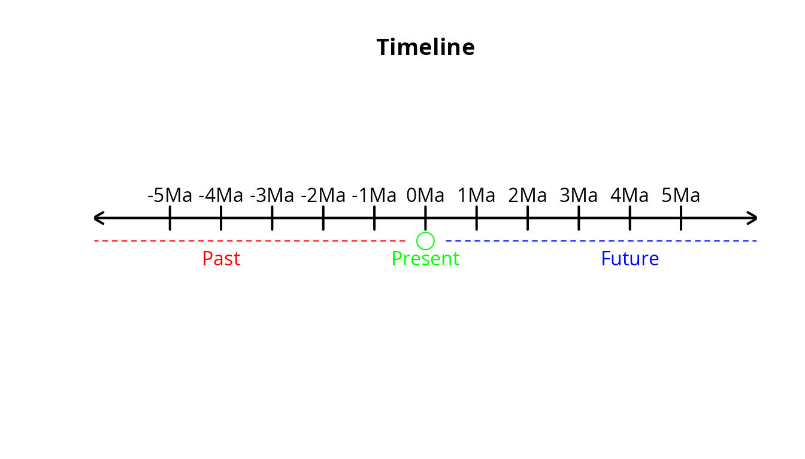

1. Introduction
Eco-evolutionary processes take place across space and time. For this
reason, time is also an important aspect of eco-evolutionary mechanistic
models. There are many approaches to dealing with time (including
constraints and rates) in ecology and evolution. In
gen3sis2, time is particularly important when defining
spaces and configuration files. In this vignette, we will see how to
properly handle and make time explicit in gen3sis2
simulations.
2. Time in gen3sis2
2.1 Time and time units: what is accepted?
gen3sis2 is an interdisciplinary project that can be
used as a tool across many fields. In addition, depending on the scope
of the experiment and/or the organism being modeled, the simulation can
operate on different time scales. This complexity, combined with the
variety of ways time is measured across scientific disciplines, can
sometimes make it difficult to compare experiments.
To promote standardization and reproducibility, gen3sis2
accepts only four time units: a (annum), ka (kilo-annum), Ma
(mega-annum), and Ga (giga-annum). In addition to these,
gen3sis2 also supports the flag-unit “timestep”, which will
be explained later.
The choice of these four accepted time units is meant to
strategically cover a wide range of possible temporal scales. Time in
gen3sis2 is based on
,
which is equivalent to one year, and the remaining units are powers of
ten of
.
See the table below:
| time unit | a equivalent | power of ten |
|---|---|---|
| a | 1 a | a |
| ka | 1,000 a | a |
| Ma | 1,000,000 a | a |
| Ga | 1,000,000,000 a | a |
In gen3sis2, time is conceptualized as a number line.
Negative values represent the past, zero represents the present, and
positive values represent the future.
For example, if a simulation starts five million years ago and ends five million years in the future, we would say that it starts at and ends at .
Visually, this situation can be represented by the following image:

2.2 Time and time-steps: how to deal with time in gen3sis_space_ objects
When creating your spaces, the function
create_spaces_raster requires the duration
parameter. This parameter must be provided as a list in the format
list(from, to, by, unit).
The interpretation of the first two elements is straightforward:
from defines when the environmental data starts, and
to defines when it ends. The period between these two
points in time is divided into equal intervals, known as
time-steps. The by element of
duration determines the length of each time-step, i.e., how
much time is covered by each step, given the selected unit. Finally,
unit specifies the time unit used (and therefore the time
scale) and must be one of the accepted options: a, ka, Ma, or Ga.
This list format is intentionally similar to the base R function
seq(from, to, by) and works in the same way.
The time-step is the backbone of a gen3sis2 simulation,
because each process (dispersal, ecology, evolution, etc.) is simulated
once per time step. In other words, the simulation is initialized at the
first time-step and progresses sequentially until the last.
Consequently, all metrics and simulation outputs are computed and
reported based on these time-steps.
Users should be aware that the number of time-steps is an important modeling decision. For example, a simulation covering the period from −100 Ma to 0 Ma with 10 time steps of 10 Ma would run the processes 11 times. On the other hand, using 20 time steps of 5 Ma would result in 21 simulation steps. Therefore, these two simulations may not produce the same outcomes, especially when stochastic factors are involved.
Consider a space ranging from −5 Ma to 5 Ma (as described in the previous section), with each time step comprising 1 Ma. The corresponding function call would look like this:
create_spaces_raster(
raster_list = your_environmental_rasters,
cost_function = your_cost_function,
output_directory = where_to_save_spaces.rds,
duration = list(from = -5, to = 5, by = 1, unit = "Ma") # time is here
)This will produce 11 time-steps:
2.3 Time and step_time: how to deal with time in config
file
In the configuration file, time is defined using the variables
step_time, start_time, and
end_time.
The step_time variable sets the time scale at which the
described processes take place. It must be provided as a list in the
format list(x, unit), where unit is the chosen
time unit and x is the numerical base.
For example, if step_time = list(x = 2.5, unit = "ka"),
this means that the processes are designed to return the specified
values every 2.5 ka (2,500 years). The relationship between this and the
by element of the space duration will be discussed in the
next section. The variables start_time and
end_time define when the simulation should begin and end,
respectively. These can be numeric values or NA.
The time unit must always remain consistent across the configuration.
For example, if a simulation has
step_time = list(x = 2.5, unit = "ka") and is intended to
run from −10 ka to −2 ka, then the variables should be defined as
start_time = -10 and end_time = -2.
gen3sis2 will always assume that both
start_time and end_time are expressed in the
same unit as step_time.
If start_time = NA, the simulation will start at the
earliest available time step. If end_time = NA, it will end
at the latest available time step. If both are NA, the simulation will
simply use all available time steps in the defined space.
2.4 Time and simulation: how the pieces fit together
To enhance reproducibility and allow experimentation with different
configurations and spaces, gen3sis2 allows the use of
configuration files and spaces that are not defined on the same time
scale. For example, it is possible to use a configuration with
step_time = list(x = 500, unit = "ka") together with a
space constructed using
duration = list(from = -10, to = 0, by = 1, unit = "Ma").
In this case, the space has time-steps spaced every 2 Ma, meaning that
processes are simulated every 2 Ma, while the configuration assumes that
processes occur every 1 Ma.
To reconcile these differences, when gen3sis2 reads the
configuration file to initialize and run the simulation, it goes through
a process of time interpretation. This process has two main objectives:
(1) to understand how time is defined in both the configuration file and
the space, and (2) to harmonize the time scales between them.
Not every process is time-dependent, but some are. Dispersal, for
instance, usually depends on time, i.e., a species can disperse farther
over longer periods. For dispersal, gen3sis2 automatically
scales the returned values according to the time-step. For example,
considering the configuration and space described above, if the
dispersal value returned by the configuration is 500, the simulation
assumes that this corresponds to each 1 Ma. Since each time step in the
space spans 2 Ma, the value is automatically scaled to 1000 for each
time-step. Similarly, isolated populations accumulate genetic divergence
over time. Therefore, gen3sis2 also automatically scales the values
obtained from the get_divergence_factor function.
The scaling process is fully transparent through on-screen messages and warnings. It is performed using a multiplier that indicates how many times an event should occur within each time-step. This multiplier is calculated as follows:
where
- is the time-step of the space,
- is the time-step of the config,
- is the conversion factor expressing one unit of the space’s time unit in the config’s time unit,
- is the resulting multiplier.
For example, consider the config and space described above, with
step_time = list(x = 500, unit = "ka") and
duration = list(from = -10, to = 0, by = 1, unit = "Ma"),
respectively. In this case,
,
,
and since
,
.
Therefore,
This result indicates that config-defined events should occur twice per space time-step.
The multiplier is accessible to users through the joker variable
scale_time, which is a simple numeric value available for
any desired operation. For example:
get_dispersal_values <- function(n, species, space, config) {
values <- rweibull(n, shape = 1.5, scale = 133)*scale_time # values will be properly scaled
return(values)
}Users should not define this variable within the config
file, as it serves as a placeholder automatically replaced by
config$user$scale_time during the simulation. Its sole
purpose is to keep the code clean and concise. For instance, using
config$user$scale_time instead of scale_time
will produce the same result.
When gen3sis2 detects the use of scale_time
inside any of the get_dispersal_values or
get_divergence_factor functions, it automatically
deactivates internal scaling for that process. This means that, if users
prefer to handle time scaling manually (for example, using custom
functions), they can simply include scale_time anywhere in
their code:
get_dispersal_values <- function(n, species, space, config) {
scale_time # no scaling will occur in this function
values <- rweibull(n, shape = 1.5, scale = 133)
return(values)
}For best-practice usage, it is recommended to call
scale_time at the beginning of the function body.
If the user wishes to deactivate time scaling entirely, it is
possible to set the config time unit to “timestep”. In this case, the
config is always interpreted as being in the same temporal framework as
the spaces. For example, using
step_time = list(x = 1, unit = "timestep") completely
disables time scaling. When “timestep” is used as the time unit:
- The value of
xbecomes irrelevant and is ignored. - The
scale_timemultiplier is automatically set to 1.
This approach is useful when temporal consistency between config and spaces is already ensured, or when users prefer to work with abstract, step-based time rather than explicit chronological units.
2.5 Human and machine config
As said above, when the config file the used provided is read by
gen3sis2 (in run_simuation() or
create_input_config()), it goes trough a process of
interpretation. In this processes, many aspects of the config are
adapted to ensure that the simulation will run without problems. One
central points is to replace the place-holder scale_time by
the callable config$user$scale_time. In addition to that,
code commentaries are removed, gen3sis2 detects whether the
user used scale_time inside any of the main functions or
not. Finally, the adapted code is parsed and evaluated.
The file provided by the user is called in gen3sis2 as
“human config”. After this code is parsed and evaluated, it produces a
list config that is stored internally during the simulation
(and saved within the simulation state). This is called the “machine
config”. They essentially carry the same information, but the machine
config is interpreted, adapted and easily accessed by the simulation
(and the user, when desired).
3. Conclusion
Time is an important aspect of eco-evolutionary simulations, and
dealing with it in gen3sis2 is straight-forward. Every
config file must be written considering time, as well as every space
created. Config and space can have different timeframes, but in tis case
gen3sis2 will calculate a multiplier and apply it to
config’s processes, what can generate distortions.